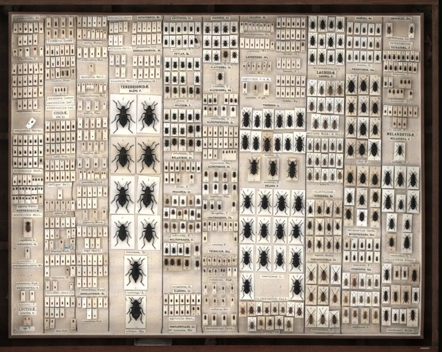

ZB-SPEC-120266311-v2 · authoring_candidate

{
"id": "ZB-SPEC-120266311-v2",
"blockers": [],
"review": [],
"advisory": [],
"metrics": {
"width": 3870,
"height": 3081,
"mode": "RGB",
"exif_orientation": 1,
"frame_count": 1,
"global_640_proxy": {
"contrast_p90_p10": 192.0,
"gray_entropy_bits": 7.770504668596065,
"edge_fraction_16": 0.29839177472569633
},
"object_count": 12,
"objects_per_MP": 1.006418433560029,
"class_count": 12,
"known_fraction": 1.0,
"repeated_classes": 0,
"spatial_entropy_4x4": 0.6721804688852168,
"median_bbox_short_px": 320.0,
"p10_bbox_short_px": 222.4,
"edge_touching_count": 0,
"nearcolor_pair_count": 14,
"different_class_neighbor_pairs": 18,
"nearcolor_neighbor_fraction": 0.7777777777777778,
"bbox_overlap_pair_count": 0,
"han_text_coverage": 0.0,
"distinct_dependency_regions": 6,
"effective_counterfactuals": 5
},
"source": {
"kind": "real_photo",
"url": "https://commons.wikimedia.org/wiki/File:Drawer_27_(5555544961).jpg",
"license_url": "https://creativecommons.org/licenses/by/2.0",
"authorization": "verified",
"scene_id": "commons:120266311"
},
"difficulty_status": "no_complete_failure_recorded",
"annotation_provenance": "author_manual_bbox",
"preview": "001.jpg",
"nearcolor_pairs": [
{
"a": "A2_caeruleus",
"b": "A1_obscurus",
"deltaE76": 10.746550109801522
},
{
"a": "A5_hirta",
"b": "A1_obscurus",
"deltaE76": 3.993307371610499
},
{
"a": "A5_hirta",
"b": "A4_atripes",
"deltaE76": 3.7093155051253976
},
{
"a": "A6_ceramboides",
"b": "A3_pallidus",
"deltaE76": 10.14258285783405
},
{
"a": "B1_murina",
"b": "A4_atripes",
"deltaE76": 4.153799109229301
},
{
"a": "B2_ater",
"b": "A4_atripes",
"deltaE76": 10.297377600745156
},
{
"a": "B2_ater",
"b": "A5_hirta",
"deltaE76": 6.744616936975056
},
{
"a": "B2_ater",
"b": "B1_murina",
"deltaE76": 6.186378201103628
},
{
"a": "B3_melanarius",
"b": "A5_hirta",
"deltaE76": 7.295323386659923
},
{
"a": "B3_melanarius",
"b": "B2_ater",
"deltaE76": 0.9177512061274108
},
{
"a": "B4_sulphureus",
"b": "A6_ceramboides",
"deltaE76": 2.838874250222641
},
{
"a": "B4_sulphureus",
"b": "B3_melanarius",
"deltaE76": 2.813354854457846
},
{
"a": "B5_desmaresti",
"b": "B2_ater",
"deltaE76": 10.08979059130398
},
{
"a": "B6_vaudoueri",
"b": "B4_sulphureus",
"deltaE76": 8.809907030423167
}
],
"overlap_candidates": [],
"roi_metrics": [
{
"id": "r1_A1_A3_pins",
"file": "001_roi1.png",
"contrast_p90_p10": 195.0,
"gray_entropy_bits": 7.4854269127823985,
"edge_fraction_16": 0.09433622825520901
},
{
"id": "r2_A5_A6_lone_pins",
"file": "001_roi2.png",
"contrast_p90_p10": 149.0,
"gray_entropy_bits": 7.533193385614164,
"edge_fraction_16": 0.13226460306602486
},
{
"id": "r3_B1_murina_male",
"file": "001_roi3.png",
"contrast_p90_p10": 148.0,
"gray_entropy_bits": 7.5651027778811315,
"edge_fraction_16": 0.1298205956225332
},
{
"id": "r4_B2_B3_codes_pins",
"file": "001_roi4.png",
"contrast_p90_p10": 176.0,
"gray_entropy_bits": 7.6166712211258165,
"edge_fraction_16": 0.10793634390823602
},
{
"id": "r5_B5_desmaresti",
"file": "001_roi5.png",
"contrast_p90_p10": 85.0,
"gray_entropy_bits": 6.962459518308537,
"edge_fraction_16": 0.08214981406056313
},
{
"id": "r6_B4_B6_bottom",
"file": "001_roi6.png",
"contrast_p90_p10": 140.0,
"gray_entropy_bits": 7.6026829112184755,
"edge_fraction_16": 0.10525669847001694
}
],
"reasoning_metrics": {
"node_count": 20,
"max_depth": 6,
"branch_nodes": 14,
"join_nodes": 10,
"multi_visual_join_nodes": 10,
"output_count": 6,
"outputs_with_visual_ancestry": 6,
"output_visual_coverage": 1.0,
"state_nodes": 1,
"parameter_nodes": 3,
"output_evidence_regions": {
"out_q1": [
"r1_A1_A3_pins",
"r2_A5_A6_lone_pins",
"r3_B1_murina_male",
"r4_B2_B3_codes_pins",
"r5_B5_desmaresti",
"r6_B4_B6_bottom"
],
"out_q2": [
"r1_A1_A3_pins",
"r2_A5_A6_lone_pins",
"r3_B1_murina_male",
"r4_B2_B3_codes_pins",
"r5_B5_desmaresti",
"r6_B4_B6_bottom"
],
"out_q3": [
"r1_A1_A3_pins",
"r2_A5_A6_lone_pins",
"r3_B1_murina_male",
"r4_B2_B3_codes_pins",
"r5_B5_desmaresti",
"r6_B4_B6_bottom"
],
"out_q4": [
"r1_A1_A3_pins",
"r2_A5_A6_lone_pins",
"r3_B1_murina_male",
"r4_B2_B3_codes_pins",
"r5_B5_desmaresti",
"r6_B4_B6_bottom"
],
"out_q5": [
"r1_A1_A3_pins",
"r2_A5_A6_lone_pins",
"r3_B1_murina_male",
"r4_B2_B3_codes_pins",
"r5_B5_desmaresti",
"r6_B4_B6_bottom"
],
"out_q6": [
"r1_A1_A3_pins",
"r2_A5_A6_lone_pins",
"r3_B1_murina_male",
"r4_B2_B3_codes_pins",
"r5_B5_desmaresti",
"r6_B4_B6_bottom"
]
}
},
"measurement_margins": [
{
"id": "d_near_733",
"ratio": 1.833,
"unit": "px"
},
{
"id": "d_max_1490",
"ratio": 2.802,
"unit": "px"
}
],
"platform_points": [
{
"xy": [
3156,
206
],
"label": "B1 (murina, L.) 第 1 行第 3 卡左上角隐藏 ♂ 符号（X_B1=1 决定 8 个合法方案存亡），作者关键证据点"
},
{
"xy": [
3502,
795
],
"label": "B5 (desmaresti, Lt.) 多虫纸卡区：5 张纸卡装 1,1,3,4,1 共 10 只甲虫且含 3 张下端插针卡，作者关键证据点"
},
{
"xy": [
2952,
2828
],
"label": "A6 (ceramboides, L.) 最右下角唯一 1 张下端插针卡（B_A6=1 决定近距边 A6-B6 与赢家反转），作者关键证据点"
}
],
"evaluation_counts": {
"correct": 3,
"incorrect": 0,
"timeout": 0,
"infra_error": 3,
"partial": 0
},
"decision": "authoring_candidate"
}